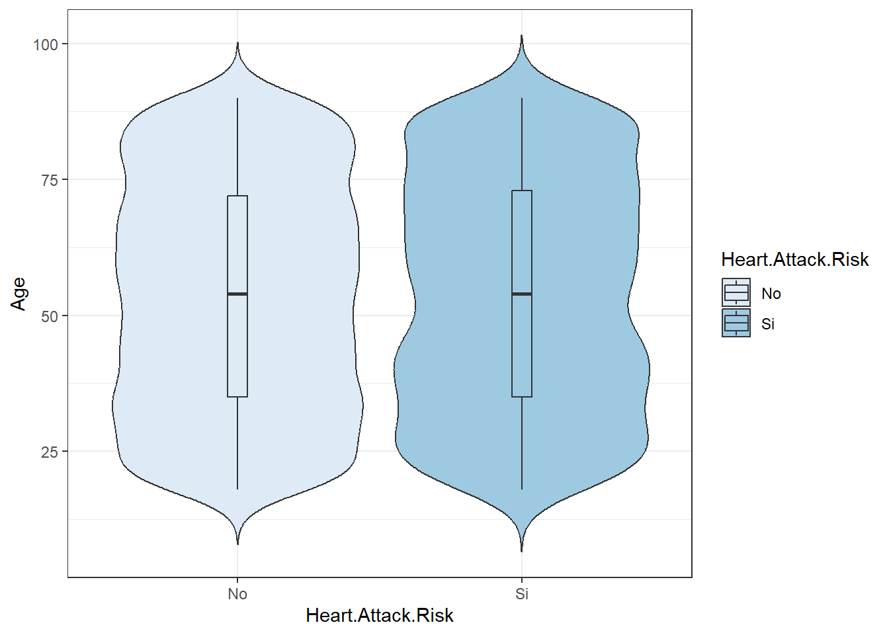

library(tidyverse)
library(dplyr)
library(GGally)
library(psych)
library(skimr)
library(fmsb)Entrega 3 Análisis de Datos
Presentación del problema
Vamos a tratar una base de datos relacionados con la predicción de riesgo de ataque cardíaco. Este hecho es un problema que afecta a un gran porcentaje de la población mundial y es de interés poder predecir esta dolencia.
Nuestro objetivo para este estudio sería:
Estudiar algunos perfiles con riesgo de padecer un ataque al corazón.
Comprobar si hay diferencias entre diferentes continentes respecto al mismo perfil de riesgo.
Poder predecir si un individuo tiene riesgo de sufrir un ataque al corazón.
Los datos provienen de la página web Kaggle: Kaggle - Heart Attack Prediction.
El dataset consta de 8763 muestras, donde cada una representa una serie de características de un paciente. A cada paciente se le atribuyen 26 valores, uno de ellos es su ID, y el resto son variables relacionadas con la salud cardíaca, tanto geográficas como de hábitos personales.
Antes de explicar cada variable, modifiquemos la tabla de datos para tenerla limpia en formato tidy.
Cargamos la librerías que utilizaremos
Convertir los datos en tidy
Cargamos la tabla de datos y la convertimos a tibble para facilitarnos la manipulación.
datos = read.csv("heart_attack_prediction_dataset.csv", header = T)
datos = datos %>% as.tibbleVamos a modificar el data set para que sea más cómodo a la hora de trabajar con él. Empezamos por cambiar el ID del paciente por una enumeración básica.
datos = datos %>%
mutate(Patient.ID = c(1:8763))Transformamos las variables qualitativas en factor y, en las binarias (0: No, 1: Si) cambiamos los valores para que sea más ilustrativa y entendible:
datos = datos %>%
mutate(Sex = Sex %>% as.factor)
datos = datos %>%
mutate(Diet = Diet %>% as.factor)
datos = datos %>%
mutate(Country = Country %>% as.factor)
datos = datos %>%
mutate(Continent = Continent %>% as.factor)
datos = datos %>%
mutate(Hemisphere = Hemisphere %>% as.factor)
datos = datos %>%
mutate(Diabetes = if_else(Diabetes == 0, "No", "Si") %>% as.factor)
datos = datos %>%
mutate(Family.History = if_else(Family.History == 0, "No", "Si") %>% as.factor)
datos = datos %>%
mutate(Smoking = if_else(Smoking == 0, "No", "Si") %>% as.factor)
datos = datos %>%
mutate(Obesity = if_else(Obesity == 0, "No", "Si") %>% as.factor)
datos = datos %>%
mutate(Alcohol.Consumption = if_else(Alcohol.Consumption == 0, "No", "Si") %>% as.factor)
datos = datos %>%
mutate(Previous.Heart.Problems = if_else(Previous.Heart.Problems == 0, "No", "Si") %>% as.factor)
datos = datos %>%
mutate(Medication.Use = if_else(Medication.Use == 0, "No", "Si") %>% as.factor)
datos = datos %>%
mutate(Heart.Attack.Risk = if_else(Heart.Attack.Risk == 0, "No", "Si") %>% as.factor)
datos = datos %>%
mutate(Stress.Level = Stress.Level %>% as.factor)El siguiente paso va a ser separar la variable qualitativa Blood.Pressure en dos nuevas variables, ésta vez cuantitativas, ya que la presión arterial está representada como un símbolo que equivale a la presión alta y la baja separadas por una barra:
# vamos a convertir la columna blood.pressure en high y low
datos <- datos %>%
rowwise() %>%
mutate(
High.Blood.Pressure = as.numeric(unlist(strsplit(Blood.Pressure, "/"))[1]),
Low.Blood.Pressure = as.numeric(unlist(strsplit(Blood.Pressure, "/"))[2])
) %>%
ungroup()Por último, vamos a eliminar las variables que consideramos que no van a ser concluyentes para el estudio, en este caso, eliminamos la variable Income (nivel de ingresos del paciente) y la variable que anteriormente separamos en dos:
datos <- datos[,c(-5,-18)]En este punto, tenemos la tabla de datos con la información que queremos estudiar, reordenemos las columnas para finalizar la conversión a tidy data:
datos <- datos %>%
relocate(where(is.factor)) %>%
relocate(Patient.ID)
# 1 id
# 2-14 cualitativas
# 15-26 cuantitativasVeamos como se estructuran nuestros datos:
str(datos)tibble [8,763 × 26] (S3: tbl_df/tbl/data.frame)
$ Patient.ID : int [1:8763] 1 2 3 4 5 6 7 8 9 10 ...
$ Sex : Factor w/ 2 levels "Female","Male": 2 2 1 2 2 1 2 2 2 1 ...
$ Diabetes : Factor w/ 2 levels "No","Si": 1 2 2 2 2 2 1 1 2 1 ...
$ Family.History : Factor w/ 2 levels "No","Si": 1 2 1 2 2 2 1 1 1 2 ...
$ Smoking : Factor w/ 2 levels "No","Si": 2 2 1 2 2 2 2 2 2 2 ...
$ Obesity : Factor w/ 2 levels "No","Si": 1 2 1 1 2 1 1 2 2 2 ...
$ Alcohol.Consumption : Factor w/ 2 levels "No","Si": 1 2 1 2 1 2 2 2 1 2 ...
$ Diet : Factor w/ 3 levels "Average","Healthy",..: 1 3 2 1 3 3 2 1 1 3 ...
$ Previous.Heart.Problems : Factor w/ 2 levels "No","Si": 1 2 2 2 2 2 1 1 1 1 ...
$ Medication.Use : Factor w/ 2 levels "No","Si": 1 1 2 1 1 2 1 2 1 1 ...
$ Stress.Level : Factor w/ 10 levels "1","2","3","4",..: 9 1 9 9 6 2 7 4 5 4 ...
$ Country : Factor w/ 20 levels "Argentina","Australia",..: 1 4 7 4 17 8 4 11 3 11 ...
$ Continent : Factor w/ 6 levels "Africa","Asia",..: 6 5 4 5 2 4 5 2 6 2 ...
$ Hemisphere : Factor w/ 2 levels "Northern Hemisphere",..: 2 1 1 1 1 1 1 1 2 1 ...
$ Heart.Attack.Risk : Factor w/ 2 levels "No","Si": 1 1 1 1 1 2 2 2 1 1 ...
$ Age : int [1:8763] 67 21 21 84 66 54 90 84 20 43 ...
$ Cholesterol : int [1:8763] 208 389 324 383 318 297 358 220 145 248 ...
$ Heart.Rate : int [1:8763] 72 98 72 73 93 48 84 107 68 55 ...
$ Exercise.Hours.Per.Week : num [1:8763] 4.17 1.81 2.08 9.83 5.8 ...
$ Sedentary.Hours.Per.Day : num [1:8763] 6.62 4.96 9.46 7.65 1.51 ...
$ BMI : num [1:8763] 31.3 27.2 28.2 36.5 21.8 ...
$ Triglycerides : int [1:8763] 286 235 587 378 231 795 284 370 790 232 ...
$ Physical.Activity.Days.Per.Week: int [1:8763] 0 1 4 3 1 5 4 6 7 7 ...
$ Sleep.Hours.Per.Day : int [1:8763] 6 7 4 4 5 10 10 7 4 7 ...
$ High.Blood.Pressure : num [1:8763] 158 165 174 163 91 172 102 131 144 160 ...
$ Low.Blood.Pressure : num [1:8763] 88 93 99 100 88 86 73 68 105 70 ...Variables
Vamos a crear una tabla con la información de cada variable.
Empezamos por las cuantitativas
Unidad Media Desv Minimo Maximo Rango
Age Años 53.708 21.250 18.000 90.000 72.000
Cholesterol mg/dl 259.877 80.863 120.000 400.000 280.000
Heart.Rate lpm 75.022 20.551 40.000 110.000 70.000
Exercise.Hours.Per.Week h 10.014 5.784 0.002 19.999 19.996
Sedentary.Hours.Per.Day h 5.994 3.466 0.001 11.999 11.998
BMI kg/m^2 28.891 6.319 18.002 39.997 21.995
Triglycerides mg/dl 417.677 223.748 30.000 800.000 770.000
Physical.Activity.Days.Per.Week días 3.490 2.283 0.000 7.000 7.000
Sleep.Hours.Per.Day h 7.024 1.988 4.000 10.000 6.000
High.Blood.Pressure mm Hg 135.076 26.350 90.000 180.000 90.000
Low.Blood.Pressure mm Hg 85.156 14.677 60.000 110.000 50.000Veamos ahora los datos cualitativos
summary(datos_qual) Sex Diabetes Family.History Smoking Obesity Alcohol.Consumption
Female:2652 No:3047 No:4443 No: 904 No:4369 No:3522
Male :6111 Si:5716 Si:4320 Si:7859 Si:4394 Si:5241
Diet Previous.Heart.Problems Medication.Use Stress.Level
Average :2912 No:4418 No:4396 2 : 913
Healthy :2960 Si:4345 Si:4367 4 : 910
Unhealthy:2891 7 : 903
9 : 887
8 : 879
3 : 868
(Other):3403
Country Continent Hemisphere
Germany : 477 Africa : 873 Northern Hemisphere:5660
Argentina : 471 Asia :2543 Southern Hemisphere:3103
Brazil : 462 Australia : 884
United Kingdom: 457 Europe :2241
Australia : 449 North America: 860
Nigeria : 448 South America:1362
(Other) :5999
Heart.Attack.Risk
No:5624
Si:3139
Análisis multivariante exploratorio
Queremos encontrar un perfil de paciente que tiene riesgo de sufrir un ataque cardíaco. Para ello compararemos las variables entre los usuarios con riesgo y los que no.
Empezamos por las variables cuantitativas:
Notemos que, con las variables cuantitativas, no podemos establecer un perfil de riesgo.
Veamos si a simple vista, hay diferencias entre las variables cualitativas y el hecho de tener riesgo de padecer un ataque cardíaco.
Para ello, consideramos unas tablas de frecuencias:
Estres
Riesgo 1 2 3 4 5 6 7 8 9 10
No 562 583 551 597 543 533 567 568 584 536
Si 303 330 317 313 317 322 336 311 303 287Notemos que parace ser que el nivel de estres no afecta.
Obesidad
Riesgo No Si
No 2776 2848
Si 1593 1546Notemos que hay prácticamente el doble de individuos con obesidad que no tienen riesgo de tener un ataque. Y de los que si se les consideran de riesgo, hay casi el mismo número de personas con obesidad que sin.
Historial Familiar
Riesgo No Si
No 2848 2776
Si 1595 1544Notemos que hay muchos más individuos con casos de ataque en su familia que no tienen riesgo de tener un ataque. Y de los que son de riesgo, hay casi el mismo número de personas con antecedentes familiares que sin ellos.
Consumo de alcohol
Riesgo No Si
No 2232 3392
Si 1290 1849Notemos que hay muchos más individuos que consumen alcohol y no tienen riesgo de tener un ataque. Y de los que son de riesgo, hay casi el mismo número de personas con que consumen alcohol que los que no.
Dieta
Riesgo Average Healthy Unhealthy
No 1886 1881 1857
Si 1026 1079 1034Notemos que hay más individuos con mala dieta que no tienen riesgo de tener un ataque. Y de los que son de riesgo, hay prácticamente el mismo número de de individuos en cada tipo de dieta.
Fumar
Riesgo No Si
No 575 5049
Si 329 2810Notemos que hay aproximadamente el doble de individuos que fuman y no tienen riesgo de tener un ataque. Pero, de los que sí tienen riesgo, en este caso, hay muchos más individuos que fuman.
Después de estas observaciones, intentemos establecer un perfil con las variables cualitativas.

Notemos que hay poca proporción de individuos que cumplen una serie de caraterísticas que pensábamos que era un perfil de riesgo.
Veamos un gráfico de violin, para las edades:
datos_riesgo <- datos %>%
filter(Heart.Attack.Risk == "Si")
#ggplot(datos_riesgo, aes(x=Age, colour="purple"))+
#geom_density()
ggplot(datos, aes(x=Heart.Attack.Risk, y=Age, fill = Heart.Attack.Risk))+
geom_violin(trim = FALSE)+
geom_boxplot(width = 0.07)+
scale_fill_brewer()+
theme_bw()
Vemos que la edad no parece influir en el perfil de riesgo, ya que se disrtibuyen de forma similar.
Por último, hagamos un ggpairs para las variables cuantitativas
ggpairs(datos_quant)
A simple vista no hay ninguna variable dependiente de otra, ni ninguna tendencia.
Estimación del vector de medias y la matriz de covarianza y correlación
Calculemos el vector de medias para cada variable cuantitativa
Age Cholesterol
53.707977 259.877211
Heart.Rate Exercise.Hours.Per.Week
75.021682 10.014284
Sedentary.Hours.Per.Day BMI
5.993690 28.891446
Triglycerides Physical.Activity.Days.Per.Week
417.677051 3.489672
Sleep.Hours.Per.Day High.Blood.Pressure
7.023508 135.075659
Low.Blood.Pressure
85.156111 Veamos ahora la matriz de covarianza (a secas)
Age Chole Heart Exerc Seden BMI Trigl
Age 451.49010 -15.64684 -1.67848 0.14816 1.27268 -0.35068 16.23469
Chole -15.64684 6538.12323 0.52326 10.06226 5.30115 8.83496 -98.66296
Heart -1.67848 0.52326 422.29326 0.98362 -0.72882 0.68802 56.29298
Exerc 0.14816 10.06226 0.98362 33.44789 0.17552 0.13803 2.22165
Seden 1.27268 5.30115 -0.72882 0.17552 12.01427 -0.00052 -4.48598
BMI -0.35068 8.83496 0.68802 0.13803 -0.00052 39.92750 -8.43101
Trigl 16.23469 -98.66296 56.29298 2.22165 -4.48598 -8.43101 50057.51570
Physi 0.06711 2.96336 0.03914 0.10198 -0.04888 0.11698 -3.85898
Sleep -0.09230 0.71645 0.07401 -0.01432 0.03303 -0.12602 -12.99720
High. 1.71889 0.28271 4.59256 -1.44850 0.30984 0.71242 30.18694
Low.B -3.06396 2.47221 -5.46259 -0.29442 -0.33604 0.07470 1.78920
Physi Sleep High. Low.B
Age 0.06711 -0.09230 1.71889 -3.06396
Chole 2.96336 0.71645 0.28271 2.47221
Heart 0.03914 0.07401 4.59256 -5.46259
Exerc 0.10198 -0.01432 -1.44850 -0.29442
Seden -0.04888 0.03303 0.30984 -0.33604
BMI 0.11698 -0.12602 0.71242 0.07470
Trigl -3.85898 -12.99720 30.18694 1.78920
Physi 5.21007 0.06369 -0.45551 0.54583
Sleep 0.06369 3.95357 -0.24245 0.31163
High. -0.45551 -0.24245 694.24202 5.15719
Low.B 0.54583 0.31163 5.15719 215.37698Matriz de correlación:
Respecto al perfil de reisgo que hemos definido anteriormente, veamos si existe alguna dependencia entre las variables quantitativas

En este caso se aprecia una pequeña diferencia respecto de la anterior, sin embargo, no parece ser significativo ya que los índices de correlación son muy cercanos a 0.
Conclusiones
Nuestros datos no son adecuados para realizar ningun estudio de clasificación, ya que no se observan diferencias entre los perfiles de riesgo y los que no.
No nay ninguna variable dependiente de otra.
Teniendo en cuenta que hay evidencia de ciertos perfiles de riesgo, es de extrañar la obtención de estos resultados. Este problema podría deberse a una toma de muestras desafortunada y es posible que repitiendo el muestreo se consiguiesen unos resultados más cercanos a lo que esperabamos.